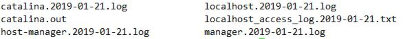
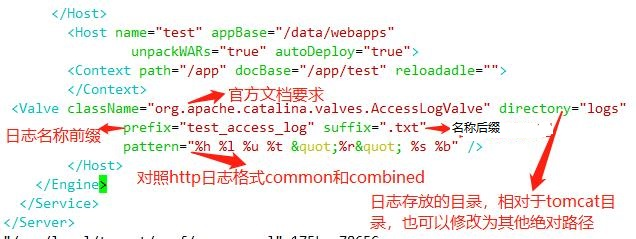

日志配置

在server.xml里的<host>标签下加上

存储为json格式
Tomcat日志切割
配置logrotate对catalina.out日志切割
1 | vim /etc/logrotate.d/tomcat |
daily 指定转储周期为每天,其它可用值为‘monthly’，‘weekly’或者‘yearly’
rotate 30 指定日志文件删除之前转储的次数,一次将存储30个归档日志。对于第31个归档，时间最久的归档将被删除,0指没有备份
missingok 如果日志不存在则忽略该警告信息
dateext 文件后缀是日期格式,也就是切割后文件是:xxx.log-20150828.gz
compress 通过gzip压缩转储以后的日志（gzip -d xxx.gz解压）
notifempty 如果是空文件的话，不转储
copytruncate 用于还在打开中的日志文件，把当前日志备份并截断
Tomcat的manager页面

1.manager-gui：允许通过web的方式登录查看服务器信息
2.manager-script: 允许以纯文本的方式访问
3.manager-jmx: 允许jmx的代理访问
4.manager-status: 允许以只读状态访问
5.admin-gui: 允许访问HTML GUI
6.admin-script: 允许访问文本接口
开启权限，需要进行修改
vim /usr/local/tomcat/conf/tomcat-users.xml
#去掉注释<!-- --> 修改为如下
1 | <role rolename="manager-gui"/> |
访问出现403或404
版本:Tomcat 8
问题：访问tomcat的Server Status、Manager App、HostManager三个页面均显示403，conf/tomcat-users.xml里已添加配置：
重启之后，还是403，甚至在尝试使用多种解决方法的时候还出现过404
解决办法:
打开webapps下的host-manager和manager，都有一个共同的文件夹META-INF，里面都有context.xml，这个文件的内容是：
1 | <Context antiResourceLocking="false" privileged="true" > |
这段代码的作用是限制来访IP的，127.d+.d+.d+|::1|0:0:0:0:0:0:0:1，是正则表达式，表示IPv4和IPv6的本机环回地址
比如我们只允许内网网段访问管理页面，那么改成这样就可以：
1 | <Context antiResourceLocking="false" privileged="true" > |
重启后重新打开tomcat
Tomcat多实例配置
多虚拟主机：nginx 多个Server标签（域名，ip，端口） 进程数量固定 master+worker
多实例（多进程）：同一个程序启动多次，分为两种情况:
第一种：一台机器跑多个站点；
第二种：一个机器跑一个站点多个实例，配合负载均衡
1.复制程序文件
tar xf apache-tomcat-8.0.27.tar.gz
cp -a apache-tomcat-8.0.27 /usr/local/tomcat8_1
cp -a apache-tomcat-8.0.27 /usr/local/tomcat8_2
2.修改端口，以启动多实例。多实例之间端口不能一致
sed -i 's#8005#8011#;s#8080#8081#' /usr/local/tomcat8_1/conf/server.xml
sed -i 's#8005#8012#;s#8080#8082#' /usr/local/tomcat8_2/conf/server.xml
3.将配置好的tomcat程序打包，以备之后使用
4.启动tomcat多实例
/usr/local/tomcat8_1/bin/cantina.sh start